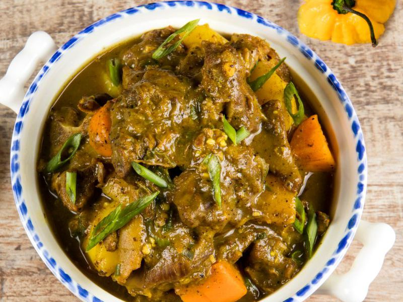
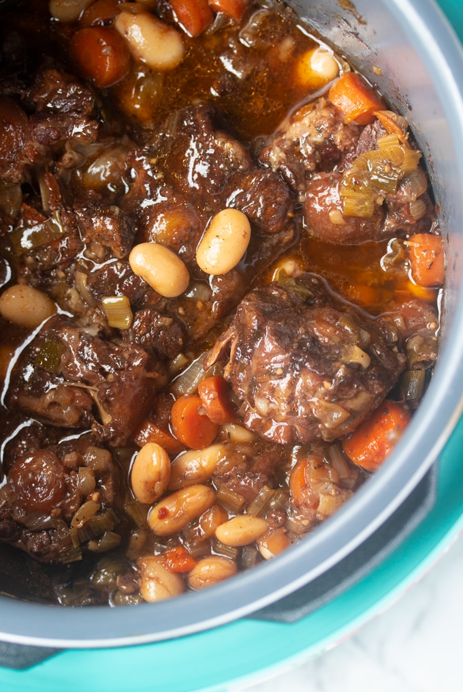

My Favorite Jamaican Dishes
Curry Goat
Curry Goat is my Jam. Curry goat reminds me a bit of being back in california with my aunts and uncles who are from either Jamaica directly or spent some time in London before coming to the states from Jamaica. I prefer mine cooked spicy and slow enough that the meat falls off the bone. Most Jamaican meals are cooked bone in because it's said that the flavor comes from the marrow in the bone. Yellow Jamaican curry powder is the essential ingredient in the meal. One green pepper, one red pepper and an onion are also added to give the meal color. Served with Peas and rice. Very filling and hearty meal.
Oxtail Stew - My Favorite!
Oxtail Stew is one of my personal favorites. When the oxtail is properly seasoned the slow cooked unitl the meat is so soft that it falls off the bone and the gravy thinkens, its truly life! Season oxtails with garlic, salt, pepper and onion and let marinate overnight. You'll brown the oxtails in a skillet with oil before setting it to low heat and letting simmer on low heat until the meat falls off the bone. Aprox 2-3 hours time from start to finish!
Jamaican Beef Patty
Its delicate crust is flaky and golden, its ground beef punctuated with kicks of Scotch bonnet, black pepper, onion and garlic. While it may not yet have achieved the popularity of the taco or the pizza, the Jamaican beef patty is expanding its reach.Jamaican Beef Patties are filled with spicy beef and scotch bonnet peppers, seasoned with paprika and allspice and wrapped in a buttery, yellow crust flavored with turmeric.